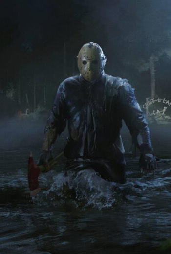

Jason Voorhees

Jason Voorhees es el personaje principal de la serie de películas Viernes 13. Es un psicópata asesino serial
que mata a la gente por puro gusto. A partir de la tercera película lleva puesta una máscara de portero de
hockey para ocultar su rostro y tiene un machete como arma principal para cometer sus crímenes.